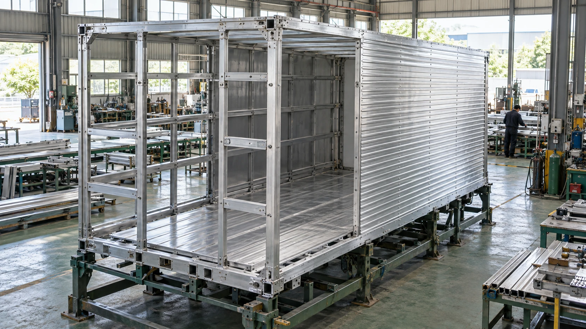
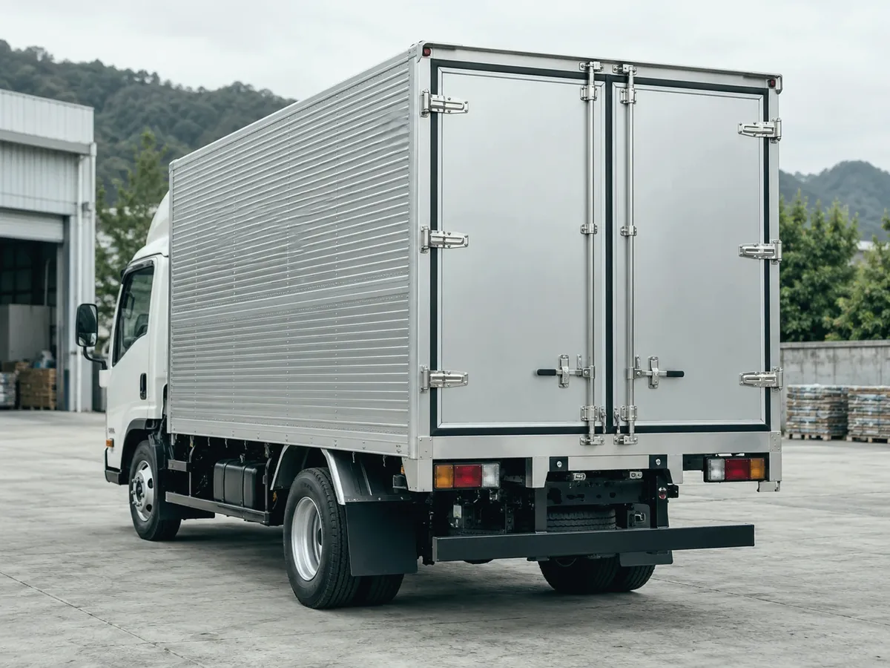
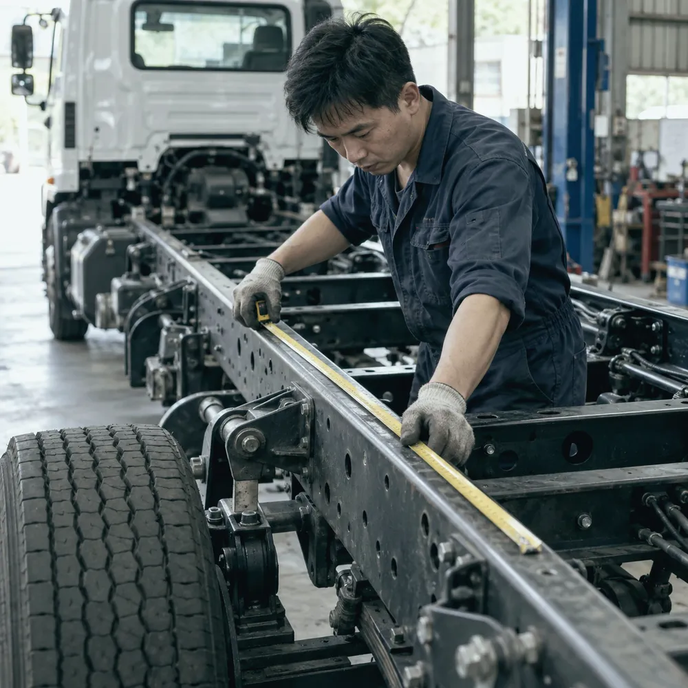
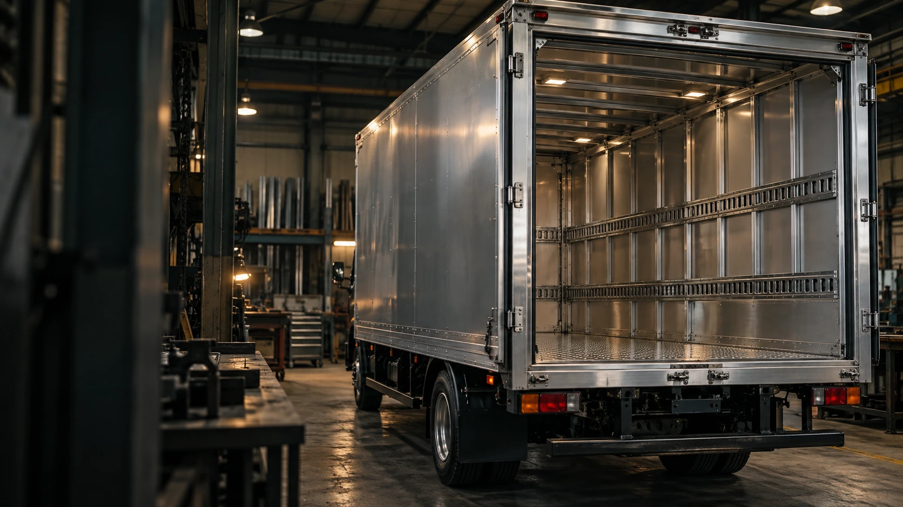

PURPOSE BUILT. ROAD READY.為每一程，
為每一程，
造好每一廂。
BUILT FOR THE WAY YOU WORK
不同生意。
同樣需要一個可靠車廂。
物流運輸LOGISTICS家具搬運MOVING建材五金BUILDING SUPPLIES倉庫零售WAREHOUSING機械設備EQUIPMENT
做過的車廂，
由行業看起。
ONE TRUCK. YOUR POSSIBILITIES.
每一個配置，
都有它的用途。
從車廂本體，到每一次裝卸。選擇你想了解的部分。

CONFIGURATION / 01AI 配置概念圖CUSTOM BOX BODY
一個車廂。
按你的需要而造。
鋁質或鐵質車廂，配合車架、貨物尺寸及日常用途。從開門方式到內部間隔，逐項確認合適配置。
- 物料與尺寸選擇
- 開門與裝卸安排
- 地板及內部配置
FROM FIRST MEASURE TO FINAL HANDOVER
一輛貨車。
四個階段，全程跟進。

01 / MEASUREAI 製作概念圖MAKE IT YOURS
先選配置。
再商討合適方案。
幾個簡單選擇，協助我們更快了解你的需要。實際報價按尺寸、物料及施工要求確認。
BEYOND THE TRUCK BODY
配套，一併照顧。
除了車廂訂造，亦可查詢
零件、包裝耗材及叉車配套。

LET’S BUILD SOMETHING THAT WORKS
你的下一個車廂，
由這裡開始。
請告訴我們車款、用途及需要。
有相片、尺寸或者初步構思，就更容易商討。
聯絡資料更新中。你可以先整理並複製查詢內容。
01 了解運輸需要02 確認車輛條件03 商討訂造方案
GOOD TO KNOW
開始之前，
你可能想問。
查詢報價前，要準備甚麼資料？
提供車款、車廂尺寸、用途及所需配置，有現況照片會更方便了解。未有完整資料亦可以先整理你的需要。
舊車廂可以維修或改裝嗎？
可以先查詢。是否適合維修、加門、加貨架或更換部件，需要按現有結構及實際狀況評估。
可以加裝升降尾板嗎？
需先核對車架、載重、安裝空間及用途，再確認合適的尾板配置。
訂造費用及交車時間如何確認？
費用及製作時間視乎尺寸、物料、配置與排期。確認方案時，應一併確認報價、交付安排及相關條款。
圖中配置都可以直接訂造嗎？
圖片用作配置及設計概念參考，並非固定產品規格。實際可行方案以車輛條件及雙方確認的設計為準。